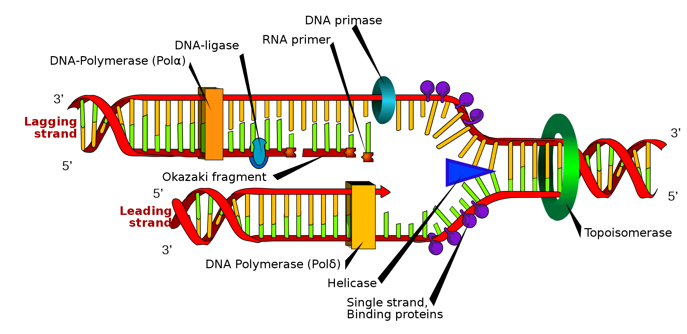

Welcome to the "Complementary DNA converter"
"how does it work?"
The "Complementary DNA converter", given one side of a DNA strand returns the other,
complementary side of said strand.
To learn more, please visit:
about DNA transcription and translation
